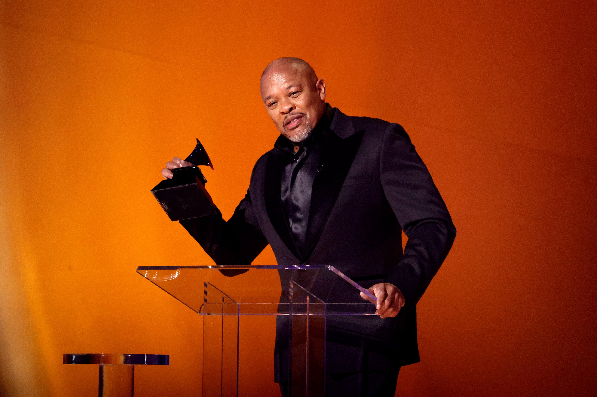

These rappers have made some of the most contributions to the Hip-hop we know today.They are at the top of the mountain when it comes to skill and artisty and the game would'nt be the same without them. withoutfurther adu, here are the greatest hip-hop artists of all time.
YE
Ye, formally known as Kanye West, is a multifaceted and polarizing figure whose influence extends far beyond the realm of music. As a visionary artist, producer, and fashion designer, he has consistently pushed the boundaries of creativity, challenging conventional norms and redefining genres. His groundbreaking albums, such as The College Dropout, My Beautiful Dark Twisted Fantasy, and Yeezus, have not only shaped the sound of modern hip-hop but also cemented his legacy as one of the most innovative musicians of his generation. Beyond his artistic contributions, Ye's outspoken nature and unfiltered opinions have made him a lightning rod for controversy, sparking debates on topics ranging from race and politics to mental health and religion. While his actions and statements often divide public opinion, there is no denying his profound impact on culture, music, and fashion, solidifying his status as a true icon of the 21st century. Love him or hate him, Ye remains an undeniable force, relentlessly pursuing his vision and leaving an indelible mark on the world.
LAURYN HILL
Lauryn Hill is a multifaceted and iconic figure whose influence transcends the boundaries of music, artistry, and social commentary. As a groundbreaking singer, songwriter, rapper, and producer, she redefined the landscape of hip-hop and R&B with her seminal album The Miseducation of Lauryn Hill, a masterpiece that seamlessly blended soulful melodies, poignant lyrics, and raw authenticity. The album not only earned her critical acclaim and numerous accolades, including five Grammy Awards, but also solidified her as one of the most influential voices of her generation. Beyond her musical genius, Lauryn Hill has been a powerful advocate for self-expression, empowerment, and social justice, using her platform to address issues of race, identity, and systemic inequality. While her career has been marked by both triumphs and challenges, her enduring impact on music and culture remains undeniable. Lauryn Hill’s artistry, passion, and unwavering commitment to her truth have cemented her legacy as a trailblazer and an inspiration to countless artists and fans worldwide.
ANDRE 3000
André 3000, one half of the legendary hip-hop duo OutKast, is a visionary artist whose creativity and innovation have left an indelible mark on music, fashion, and culture. Known for his eclectic style, poetic lyricism, and genre-defying approach, André redefined the possibilities of hip-hop with groundbreaking albums like ATLiens, Aquemini, and Stankonia, as well as the iconic double album Speakerboxxx/The Love Below, which showcased his versatility as both a rapper and a singer. His ability to blend funk, soul, jazz, and electronic influences into his music has made him a trailblazer, earning him widespread acclaim and a devoted global following. Beyond his musical contributions, André 3000 is celebrated for his unique fashion sense and enigmatic persona, which have solidified his status as a cultural icon. While he has maintained a relatively low profile in recent years, his influence continues to resonate across generations, inspiring artists to push boundaries and embrace individuality. André 3000 remains a symbol of artistic freedom and innovation, a true pioneer whose legacy transcends time and genre.
KENDRICK LAMAR
Kendrick Lamar is a transformative figure in modern music, widely regarded as one of the greatest lyricists and storytellers of his generation. With a unique ability to weave intricate narratives, social commentary, and personal introspection into his work, Kendrick has redefined the possibilities of hip-hop. Albums like good kid, m.A.A.d city, To Pimp a Butterfly, and DAMN. have not only earned critical acclaim and numerous accolades, including Pulitzer Prize for Music—a first for a non-classical or jazz artist—but have also cemented his legacy as a voice for the marginalized and a chronicler of the Black experience in America. His music delves into themes of systemic oppression, identity, resilience, and spirituality, resonating deeply with audiences worldwide. Beyond his artistry, Kendrick’s authenticity, humility, and commitment to his craft have made him a cultural icon and a role model for aspiring artists. Kendrick Lamar’s impact extends far beyond music; he is a poet, a philosopher, and a visionary whose work continues to inspire and challenge the status quo, solidifying his place as one of the most important artists of the 21st century.
2PAC
Tupac Shakur, often referred to simply as 2Pac, is an enduring icon whose influence on music, culture, and activism remains unparalleled. As one of the most prolific and impactful figures in hip-hop history, Tupac’s raw lyricism, emotional depth, and unflinching honesty captured the struggles, hopes, and complexities of life in America, particularly for Black communities. Albums like Me Against the World, All Eyez on Me, and The Don Killuminati: The 7 Day Theory showcased his ability to blend poignant social commentary with vivid storytelling, addressing themes of systemic inequality, police brutality, poverty, and resilience. Beyond his music, Tupac was a passionate advocate for social justice, using his platform to speak out against oppression and inspire change. His multifaceted talent extended to acting, where he delivered powerful performances in films like Juice and Poetic Justice, further solidifying his status as a cultural Renaissance man. Though his life was tragically cut short at the age of 25, Tupac’s legacy endures as a symbol of authenticity, rebellion, and the enduring power of art to provoke thought and inspire action. He remains a timeless figure, whose words and spirit continue to resonate across generations.
THE NOTORIOUS B.I.G
The Notorious B.I.G., also known as Biggie Smalls, is a legendary figure in hip-hop whose unparalleled storytelling, smooth flow, and larger-than-life persona have cemented him as one of the greatest rappers of all time. Born Christopher Wallace, Biggie rose from the streets of Brooklyn to become a defining voice of 1990s rap, capturing the grit, glamour, and complexities of urban life with unmatched charisma and lyrical precision. His debut album, Ready to Die, is a timeless masterpiece that showcased his ability to blend vivid narratives of struggle, ambition, and survival with effortless wordplay and a commanding delivery. Tracks like "Juicy," "Big Poppa," and "Hypnotize" became anthems, solidifying his status as a cultural icon. Despite his untimely death at just 24 years old, Biggie’s influence on hip-hop remains profound, inspiring countless artists with his unique style and authenticity. His posthumous album, Life After Death, further cemented his legacy, proving that his artistry transcended his lifetime. The Notorious B.I.G. was more than a rapper; he was a storyteller, a trendsetter, and a symbol of resilience, whose impact on music and culture continues to be felt decades after his passing.
EMINEM

Eminem, born Marshall Mathers, is one of the most influential and controversial figures in the history of hip-hop, renowned for his razor-sharp lyricism, technical prowess, and unflinching honesty. Rising from a challenging upbringing in Detroit, Michigan, Eminem broke barriers as a white artist in a predominantly Black genre, earning respect and acclaim for his unparalleled wordplay, intricate rhyme schemes, and raw emotional depth. Albums like The Slim Shady LP, The Marshall Mathers LP, and The Eminem Show not only redefined hip-hop but also catapulted him to global superstardom, addressing themes of addiction, poverty, family struggles, and personal demons with a mix of dark humor and vulnerability. Tracks like "Lose Yourself," "Stan," and "Without Me" became cultural landmarks, showcasing his ability to blend storytelling with technical mastery. Beyond his music, Eminem’s resilience in the face of adversity and his willingness to confront his own flaws have made him a symbol of perseverance and authenticity. With over two decades in the industry, Eminem remains a towering figure in hip-hop, continually pushing the boundaries of the genre and inspiring generations of artists with his relentless dedication to his craft.
LIL WAYNE
Lil Wayne, born Dwayne Michael Carter Jr., is a trailblazing figure in hip-hop whose prolific output, innovative style, and relentless work ethic have solidified him as one of the most influential rappers of his generation. Emerging from New Orleans, Louisiana, Lil Wayne rose to prominence as a young member of the Hot Boys before embarking on a solo career that would redefine the sound of hip-hop in the 2000s. His groundbreaking mixtapes, particularly the Dedication and Da Drought series, showcased his unmatched versatility, clever wordplay, and ability to effortlessly switch flows, earning him a reputation as one of the genre’s most dynamic artists. Albums like Tha Carter III, which included hits like "A Milli" and "Lollipop," cemented his status as a global superstar and earned him critical acclaim, including multiple Grammy Awards. Beyond his music, Lil Wayne’s influence extends to his role as the founder of Young Money Entertainment, where he mentored and launched the careers of artists like Drake and Nicki Minaj. Known for his distinctive raspy voice, prolific metaphors, and relentless creativity, Lil Wayne has remained a dominant force in hip-hop for over two decades, continually evolving and inspiring new generations of artists. His legacy as a pioneer and innovator in the genre is undeniable, making him a true icon of modern music.
YOUNG THUG
Young Thug, born Jeffery Lamar Williams, is a revolutionary figure in hip-hop and modern music, celebrated for his genre-defying style, eccentric personality, and groundbreaking approach to sound. Hailing from Atlanta, Georgia, Young Thug emerged as a key player in the city’s vibrant rap scene, quickly distinguishing himself with his unconventional vocal delivery, unpredictable flows, and fearless experimentation. Albums like Barter 6, JEFFERY, and So Much Fun showcase his ability to blend melody, rhythm, and raw energy in ways that challenge traditional hip-hop norms, earning him a reputation as a pioneer of the "mumble rap" and trap music movements. Tracks like "Best Friend," "Havana," and "Hot" have become anthems, highlighting his versatility and unique artistic vision. Beyond his music, Young Thug is known for his bold fashion choices and willingness to break gender norms, further solidifying his status as a cultural trendsetter. As the founder of YSL Records (Young Stoner Life), he has also played a pivotal role in nurturing new talent, contributing to the evolution of hip-hop and rap. Young Thug’s fearless creativity and boundary-pushing artistry have made him one of the most influential and innovative artists of his generation, leaving an indelible mark on the music industry.
JAY-Z
Jay-Z, born Shawn Corey Carter, is a monumental figure in hip-hop and a global icon whose influence extends far beyond music into business, culture, and philanthropy. Rising from the Marcy Projects in Brooklyn, New York, Jay-Z’s journey from street hustler to self-made billionaire is a testament to his relentless ambition, sharp intellect, and unparalleled talent. As a rapper, his discography is a masterclass in lyrical prowess and storytelling, with classic albums like Reasonable Doubt, The Blueprint, and 4:44 showcasing his ability to blend vivid narratives of street life, success, and introspection with effortless flow and wordplay. Hits like "99 Problems," "Empire State of Mind," and "Hard Knock Life" have become cultural landmarks, solidifying his status as one of the greatest rappers of all time. Beyond music, Jay-Z is a savvy entrepreneur, founding Roc-A-Fella Records, Roc Nation, and Tidal, while also venturing into ventures like sports management, fashion, and alcohol. His marriage to Beyoncé has made them one of the most powerful couples in entertainment. A vocal advocate for social justice, Jay-Z has used his platform to address systemic inequality and support marginalized communities. Jay-Z’s legacy is one of resilience, innovation, and excellence, making him not just a hip-hop legend, but a symbol of success and empowerment worldwide.
MAC MILLER
Mac Miller, born Malcolm James McCormick, was a gifted artist whose music, authenticity, and vulnerability left an indelible mark on hip-hop and beyond. Hailing from Pittsburgh, Pennsylvania, Mac Miller emerged as a prodigious talent, blending introspective lyricism, soulful production, and a genre-defying approach to create a sound that resonated deeply with fans. From his early mixtapes to critically acclaimed albums like Watching Movies with the Sound Off, GO:OD AM, and the posthumously released Circles, Mac Miller’s evolution as an artist showcased his willingness to explore new sounds and themes, from youthful exuberance to profound introspection about mental health, addiction, and self-discovery. Tracks like "Self Care," "Best Day Ever," and "2009" highlight his ability to connect with listeners on a deeply personal level, offering both vulnerability and hope. Beyond his music, Mac Miller was celebrated for his genuine personality, collaborative spirit, and dedication to his craft. His untimely passing in 2018 at the age of 26 was a profound loss to the music world, but his legacy lives on through his timeless music and the impact he had on fans and fellow artists alike. Mac Miller remains a symbol of artistic growth, resilience, and the power of honesty in creativity.
DRAKE
.webp "DRAKE billbord awards")
Drake, born Aubrey Drake Graham, is a global phenomenon whose unparalleled success has redefined the boundaries of hip-hop, R&B, and pop music. Emerging from Toronto, Canada, Drake first gained recognition as an actor before transitioning to music, where he quickly became one of the most influential artists of his generation. His unique ability to blend introspective lyrics, catchy melodies, and genre-defying production has made him a dominant force in the industry. Albums like Take Care, Nothing Was the Same, and Scorpion showcase his versatility, exploring themes of love, fame, vulnerability, and ambition with a relatable authenticity. Hits like "Hotline Bling," "God’s Plan," and "One Dance" have broken records and dominated charts worldwide, solidifying his status as a cultural icon. Beyond his music, Drake is a savvy entrepreneur, founding OVO Sound and building a brand that extends to fashion, sports, and entertainment. Known for his emotional depth, infectious hooks, and ability to stay ahead of trends, Drake has shaped the sound of modern music and inspired countless artists. His relentless work ethic and ability to evolve have kept him at the forefront of the industry for over a decade, making him one of the most successful and influential artists of all time.
DR. DRE
Dr. Dre, born Andre Romelle Young, is a pioneering figure in hip-hop whose influence as a producer, rapper, and entrepreneur has shaped the genre and the music industry as a whole. Emerging from the West Coast rap scene in the late 1980s as a member of N.W.A., Dre helped define the sound of gangsta rap with his innovative production and raw, unfiltered storytelling. His groundbreaking solo debut, The Chronic, revolutionized hip-hop, introducing the world to G-funk—a fusion of smooth melodies, heavy basslines, and laid-back grooves—and launching the career of Snoop Dogg. As a producer, Dre’s meticulous attention to detail and ear for talent have made him one of the most sought-after figures in music, working with legends like Tupac Shakur, Eminem, and 50 Cent, and helping to shape their iconic sounds. Beyond music, Dre co-founded Beats Electronics, which became a cultural phenomenon and was later sold to Apple for billions, solidifying his status as a savvy businessman. His contributions to hip-hop, both as an artist and a mentor, have earned him widespread acclaim and respect, making him a cornerstone of the genre. Dr. Dre’s legacy is one of innovation, excellence, and an unwavering commitment to pushing the boundaries of music, cementing his place as one of the most influential figures in entertainment history.
TYLER, THE CREATOR
Tyler, The Creator, born Tyler Gregory Okonma, is a visionary artist whose creativity, boldness, and genre-defying approach have made him one of the most influential figures in modern music and culture. Emerging as the leader of the rebellious collective Odd Future in the late 2000s, Tyler quickly gained attention for his provocative lyrics, dark humor, and DIY ethos. His early albums, such as Goblin and Wolf, showcased his raw talent and unapologetic individuality, while later projects like Flower Boy, IGOR, and Call Me If You Get Lost revealed his evolution as a multifaceted artist, blending hip-hop, R&B, jazz, and soul into a unique and deeply personal sound. Tracks like "Yonkers," "See You Again," and "EARFQUAKE" highlight his ability to craft emotionally resonant music that defies categorization. Beyond his music, Tyler is a prolific designer and entrepreneur, founding the fashion brand Golf Wang and curating the annual Camp Flog Gnaw Carnival, further solidifying his influence in both music and fashion. Known for his vibrant personality, artistic fearlessness, and willingness to challenge norms, Tyler, The Creator has become a symbol of creativity and self-expression, inspiring a generation of artists to embrace their individuality and push boundaries. His impact on music, fashion, and culture continues to grow, cementing his legacy as a true innovator.
J. COLE
J. Cole, born Jermaine Lamarr Cole, is one of hip-hop’s most respected and introspective voices, celebrated for his lyrical depth, storytelling, and unwavering authenticity. Hailing from Fayetteville, North Carolina, J. Cole rose to prominence with a series of critically acclaimed mixtapes that showcased his ability to blend personal narratives with social commentary. His debut album, Cole World: The Sideline Story, marked the beginning of a remarkable career, followed by projects like 2014 Forest Hills Drive, 4 Your Eyez Only, and The Off-Season, which further solidified his reputation as a masterful storyteller and thoughtful artist. Tracks like "Love Yourz," "No Role Modelz," and "Middle Child" resonate deeply with fans, offering messages of self-reflection, resilience, and empowerment. Beyond his music, J. Cole is known for his humility, work ethic, and commitment to giving back, as seen through his Dreamville Foundation and the annual Dreamville Festival. As the founder of Dreamville Records, he has also nurtured emerging talent, further cementing his influence in the industry. J. Cole’s ability to balance commercial success with artistic integrity has made him a beacon of authenticity in hip-hop, inspiring listeners and fellow artists alike. His legacy is one of substance, sincerity, and a relentless pursuit of greatness.
NAS
Nas, born Nasir bin Olu Dara Jones, is a legendary figure in hip-hop, revered for his poetic lyricism, vivid storytelling, and profound impact on the genre. Hailing from Queensbridge, New York, Nas burst onto the scene in 1994 with his debut album, Illmatic, widely regarded as one of the greatest hip-hop albums of all time. With tracks like "N.Y. State of Mind," "The World Is Yours," and "Life’s a Bitch," Nas painted a gritty yet poetic portrait of urban life, earning him immediate acclaim and cementing his status as a lyrical genius. Over the decades, Nas has continued to evolve, releasing influential albums like It Was Written, Stillmatic, and Life Is Good, each showcasing his ability to adapt to changing times while staying true to his roots. His collaborations with producers like DJ Premier, Large Professor, and Hit-Boy have further solidified his legacy as a versatile and enduring artist. Beyond music, Nas is a successful entrepreneur, investing in tech startups and founding Mass Appeal Records, which has become a platform for emerging talent. Known for his intellectual depth, cultural awareness, and unwavering authenticity, Nas remains a pillar of hip-hop, inspiring generations of artists and fans with his timeless artistry and commitment to the craft. His influence on the genre is immeasurable, making him a true icon of hip-hop culture.